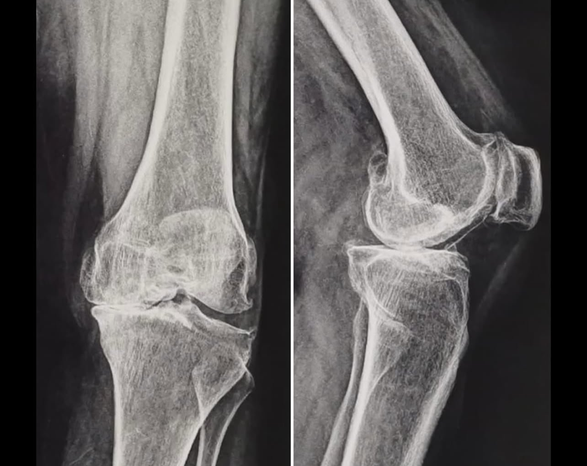

This case shows a knee in which the cartilage cushion had worn away. When pain limits walking, stairs and sleep, and medicines, physiotherapy and injections no longer help, a total knee replacement can restore a smooth, well-aligned joint.
- Condition
- Advanced (end-stage) knee osteoarthritis
- Treatment
- Total knee replacement (TKR)
- First steps
- Day 0–1, with a walker
- Hospital stay
- Usually 3–5 days
- Walking aid
- Walker → stick, about 3–6 weeks
- Full recovery
- 1–3 months

BEFORE SURGERY AFTER SURGERY
AFTER SURGERYTap or click an image to view it full size.
What the “before” X-ray shows
The front view (left image) and side view (right image) show the classic signs of advanced osteoarthritis:
- Loss of joint space: on the inner side of the knee, the gap that normally holds cartilage has almost disappeared, so the thigh bone (femur) and shin bone (tibia) are nearly touching. This “bone-on-bone” contact is a major source of pain.
- Bony spurs (osteophytes): extra bone has grown along the edges of the femur and tibia, and around the kneecap in the side view. Spurs make the knee stiff and reduce how far it can bend and straighten.
- Hardened bone under the surface (sclerosis): the whiter, denser bone beneath the joint line shows that the bone has been overloaded for a long time.
- Uneven wear: wear concentrated on one side tends to bow the leg over time, which in turn speeds up the damage.
Why a replacement was the right step
Typical symptoms at this stage are pain when walking or climbing stairs, pain at night, morning stiffness, swelling, and a knee that gives way or bends out of shape. When X-rays show end-stage wear like this and non-surgical care no longer controls symptoms, a total knee replacement offers the most reliable relief.
The procedure
In a total knee replacement, the worn surfaces are not “removed”. They are resurfaced. A thin layer of damaged bone and cartilage is shaped precisely, then capped with implants:
- Femoral component: a metal cap that covers the end of the thigh bone.
- Tibial component: a flat metal tray with a central stem that anchors in the shin bone.
- Polyethylene insert: a medical-grade plastic bearing between the two metal parts, which acts as the new cartilage.
The surgeon also balances the ligaments so the knee is stable, and corrects the leg alignment so weight passes evenly through the new joint.
What the “after” X-ray confirms
The post-operative X-ray of the left knee (marked “L”) shows:
- Well-seated components: the femoral cap fits snugly over the end of the thigh bone, and the tibial tray sits flat and square on the shin bone, with its stem centred in the bone.
- An even gap between the metal parts: this space is the plastic bearing, which does not show on X-ray. An equal gap on both sides indicates balanced ligaments and corrected alignment.
- Good fit in the side view: the components follow the natural front-to-back curve of the knee, which helps the knee bend smoothly.
- Skin staples: the row of small metal clips along the front of the knee closes the incision. They are removed at about 12–14 days.
Recovery and healing timeline
Every recovery is individual. These are the typical stages, and your own plan will be adjusted at each follow-up visit.
- Day 0–1
Standing and first steps
With a physiotherapist and a walker, most patients stand and take their first steps on the day of surgery or the next day. Ankle pumps and thigh-muscle (quadriceps) tightening begin straight away to protect circulation.
- Days 2–5
Walking and bending
Walks in the corridor, practice on a few steps, and bending the knee towards 70–90°. Pain is controlled with planned medication and ice. Discharge home is usually on day 3–5.
- Week 2
Wound check
The wound is reviewed and staples are removed at 12–14 days. Home exercises continue several times a day, aiming for about 90° of bend.
- Weeks 3–6
From walker to stick
Most people change from a walker to a single stick and manage independently at home. Knee bend usually improves to 100–110°. Some evening swelling is normal.
- Weeks 6–8
Back to daily life
Walking without support, climbing stairs normally, and returning to desk work and short trips. Driving is usually possible at about 4–6 weeks, once you can control the pedals safely and the doctor agrees.
- Weeks 8–12
Full recovery
Most remaining pain and swelling settle and the knee feels increasingly natural as the muscles recover. Longer walks, prayer or floor-level positions (as advised) and light leisure activities become comfortable. A well-placed knee replacement typically lasts 15–20 years or more.
Helping your recovery at home
- Keep up the home exercise programme every day; regaining bend in the first 6 weeks matters most.
- Use ice and keep the leg raised to control swelling.
- Avoid kneeling directly on the new knee, high-impact running and jumping.
- Tell any doctor or dentist you have a joint replacement before procedures.
When to contact the clinic urgently
- Fever, or increasing redness, warmth or discharge from the wound
- Calf pain or swelling, or sudden chest pain or breathlessness (seek emergency care)
- New numbness, tingling, or a cold or pale limb
- A sudden increase in pain, a new deformity, or being unable to move or bear weight as before
FOR YOUR CONSULTATION
Questions to ask
What does my X-ray show? Which treatment suits my bone and joint? When can I put weight on the limb, and when will I be back to my normal routine?
These X-rays are shared for patient education, and no personal details are shown. Healing times are typical ranges. Your own recovery depends on your injury, bone quality, age and general health, and is guided by Dr. Anuj Patwari at each follow-up.